1.Cómo usar este manual
1.1Para quién es este manual
Este manual es para la persona de la empresa que se encarga del sistema: el Administrador. No hace falta saber de computación. Cada tarea se explica paso a paso y con imágenes.
El Administrador hace estas tareas:
Deja el sistema listo para trabajar: datos de la empresa, balanza e impresora.
Crea las cuentas del personal y cuida quién puede entrar.
Guarda copias de seguridad de la información y sabe recuperarlas.
Trae al sistema los datos del programa anterior, cuando hace falta.
Revisa el registro técnico del sistema cuando algo falla.
Como Administrador usted también puede hacer todo lo que hacen el Operador y el Supervisor: pesar, imprimir boletas, buscar boletas, sacar reportes y mantener los catálogos. Esas tareas se explican en el Manual del Operador y en el Manual del Supervisor.
1.2Cómo leer los pasos
Cada paso pide una sola acción. Haga los pasos en orden.
Lo que aparece en negrita es un texto que usted ve en la pantalla: un botón, un campo o un menú. Está escrito igual que en el sistema.
Las teclas se muestran así: Enter, Esc, F5. Búsquelas en el teclado de la computadora.
Los círculos rojos con número, dentro de las imágenes, señalan lo que debe tocar o mirar. Debajo de la imagen está la lista de lo que significa cada número.
Los cuadros de colores le dan un aviso: Importante (amarillo) es algo que no debe olvidar, Si algo sale mal (rojo) le dice qué hacer ante un problema y Consejo (verde) es una ayuda extra.
1.3El mouse y el teclado, lo justo
| Si lee | Haga esto |
|---|---|
| Pulse, o haga clic | Mueva el mouse hasta el botón y presione una vez el botón izquierdo del mouse. |
| Haga doble clic | Presione dos veces seguidas, rápido, el botón izquierdo. |
| Haga clic derecho | Presione el botón derecho del mouse. Se abre una lista de opciones. |
| Tab | Pasa al siguiente campo de la ventana. |
| Enter | Acepta o busca, según la ventana. |
| Esc | Cierra la ventana o cancela lo que está haciendo. |
1.4Palabras que conviene conocer
Carpeta: un "cajón" de la computadora donde se guardan archivos.
Pendrive: una memoria pequeña que se conecta a un puerto USB de la computadora. Sirve para llevar archivos de un lugar a otro.
Copia de seguridad: un archivo que guarda toda la información del sistema en un momento dado. Sirve para recuperarla si algo se daña. También se le llama backup.
Puerto COM: el nombre (por ejemplo COM3 o COM4) con que Windows identifica el cable por donde la balanza se comunica con la computadora.
Impresora predeterminada: la impresora que Windows usa cuando nadie le dice cuál usar.
El glosario del final explica más palabras.
1.5Qué puede hacer cada rol
Cada persona entra con su propio usuario, y su rol decide lo que puede hacer. Las opciones de menú a las que un rol no tiene permiso no aparecen en su pantalla.
| Qué se puede hacer | Operador | Supervisor | Administrador |
|---|---|---|---|
| Registrar pesajes y ver el historial de pesajes | Sí | Sí | Sí |
| Imprimir y reimprimir boletas | Sí | Sí | Sí |
| Dar de alta un ganadero o un cliente nuevo desde la pantalla de pesaje | Sí | Sí | Sí |
| Cambiar su propia contraseña | Sí | Sí | Sí |
| Ver reportes (pantalla, PDF, Excel) | No | Sí | Sí |
| Buscar, editar y anular boletas | No | Sí | Sí |
| Mantener los catálogos de ganaderos, clientes y fleteros | No | Sí | Sí |
| Ver el visor de auditoría | No | Sí | Sí |
| Crear y administrar usuarios | No | No | Sí |
| Datos de la empresa, tipo de pesaje, configuración de impresión, visor de logs y asistente de puesta en marcha | No | No | Sí |
| Configurar la balanza y pesar con el simulador | No | No | Sí |
| Copias de seguridad y restauración | No | No | Sí |
| Importar datos del sistema anterior | No | No | Sí |
La cuenta de Administrador es la más poderosa del sistema. No la comparta. Cada persona debe tener su propio usuario.
2.Entrar al sistema y conocer la pantalla de inicio
2.1Primer ingreso: usuario admin
Si el sistema todavía no está activado, antes de la ventana de inicio de sesión aparece Activar Capataz. Escriba la clave que le entregaron y pulse Activar, o pulse Probar 15 días. Vea el capítulo «Licencia del sistema».
Cuando el sistema se instala, trae una cuenta de Administrador ya creada. Su usuario es admin y su contraseña inicial también es admin. Usted la usará una sola vez: el sistema le obliga a cambiarla en el mismo momento.
Abra Capataz. Está en el escritorio, si se creó el acceso directo, y en el menú Inicio de Windows.
En Usuario, escriba admin.
En Contraseña, escriba admin.
Pulse Ingresar, o presione Enter.

Figura 1. Pantalla de inicio de sesión con el logo y el nombre de la empresa 1Escriba su usuario2Escriba su contraseña3Pulse IngresarEl sistema dice Debe cambiar su contraseña para continuar. Escriba admin en Contraseña actual.
Escriba su contraseña nueva en Nueva contraseña.
Repítala en Confirmación.
Pulse Aceptar.

Figura 2. Ventana para cambiar la contraseña al entrar por primera vez 1Contraseña actual2Contraseña nueva3Repita la contraseña nueva4Pulse AceptarSe abre el Asistente de puesta en marcha. Siga el capítulo 3.
La contraseña nueva debe cumplir tres reglas:
Tener entre 6 y 100 caracteres.
Ser distinta de la contraseña actual.
No ser igual al nombre de usuario (no puede ser admin).
Cambie la contraseña de inmediato, porque todo el que conozca admin y admin podría entrar como Administrador. Escoja una contraseña que no sea fácil de adivinar, anótela y guárdela en un lugar seguro, que no esté a la vista. No la comparta con nadie.
Si pulsa Cancelar en el cambio de contraseña, el sistema vuelve a la pantalla de inicio de sesión y no entra. Ingrese otra vez con admin y cambie la contraseña.
Si aparece La contraseña debe tener entre 6 y 100 caracteres., La nueva contraseña debe ser distinta de la actual. o La contraseña no puede ser igual al nombre de usuario., escriba una contraseña que cumpla las reglas.
Si la contraseña de admin ya no es admin, alguien la cambió antes. Pida la contraseña al técnico que instaló el sistema, o siga el capítulo 12.
2.2Entrar al sistema cada día
Abra Capataz.
Escriba su usuario en Usuario.
Escriba su contraseña en Contraseña.
Pulse Ingresar, o presione Enter.
Cuando un usuario es nuevo, o cuando alguien le restableció la contraseña, el sistema le pide cambiarla antes de seguir, igual que en el primer ingreso.
Si aparece Usuario o contraseña incorrectos., revise que no esté activado el bloqueo de mayúsculas. El sistema avisa con Bloq Mayús está activado.
Si aparece Usuario bloqueado temporalmente por intentos fallidos. Intente de nuevo en N minuto(s)., espere ese tiempo. La cuenta se bloquea 5 minutos después de 5 intentos fallidos seguidos.
Si olvidó la contraseña de Administrador y no hay otro Administrador que pueda restablecerla, siga el capítulo 12.
2.3La pantalla de inicio
Después de entrar se ve la pantalla de inicio.
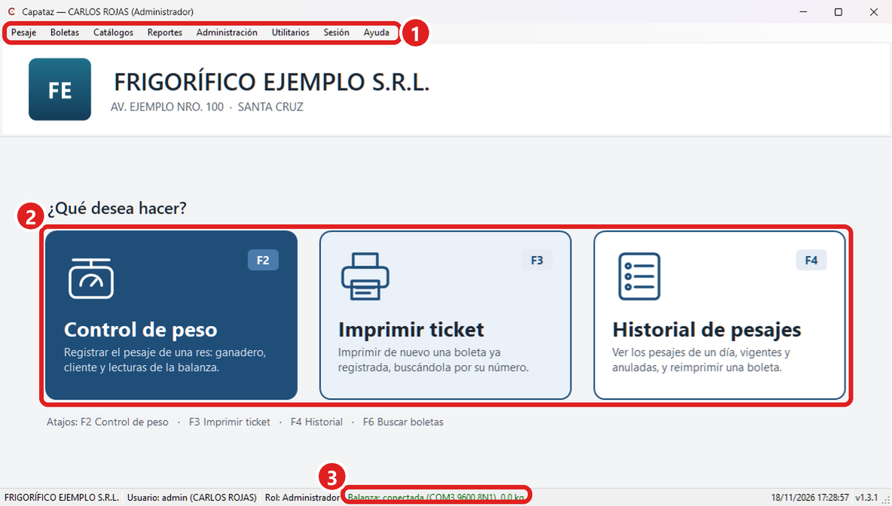
En la parte de arriba están los menús. Usted, como Administrador, los ve todos.
Las tres tarjetas llevan a las tareas más usadas: Control de peso (F2), Imprimir ticket (F3) y Historial de pesajes (F4).
Debajo de las tarjetas, una línea de Atajos muestra las teclas que usted puede usar. Como Administrador, ve todas: F2, F3, F4 y F6. Otros roles ven solo las suyas.
En la parte de abajo está la barra de estado. De izquierda a derecha muestra el nombre de la empresa, su usuario (Usuario), su rol (Rol), el estado de la balanza (Balanza) con el peso actual, la fecha y la hora, y la versión del sistema.
Los colores de la balanza
El texto Balanza de la barra de estado le dice si la balanza está funcionando.
| Lo que ve | Qué significa | Qué hacer |
|---|---|---|
| Balanza: conectada en verde | La balanza está conectada y el peso está estable. | Nada. Todo está bien. |
| Balanza: conectada en negro | Hay conexión, pero el peso todavía se mueve. | Esperar a que se estabilice. |
| Balanza: sin datos, Balanza: tramas no reconocidas o Balanza: error en rojo | La balanza no envía datos, o el sistema no entiende lo que envía. | Ver el capítulo 7 y el capítulo 13. |
| Balanza: detenida, Balanza: conectando… o Balanza: en diagnóstico en gris | Estados pasajeros. | Esperar unos segundos. |
| [SIMULADOR] al comienzo, con fondo naranja claro | La balanza es un simulador: los pesos no son reales. | Ver la sección sobre el simulador, en el capítulo 7. |
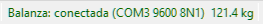
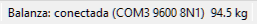
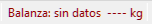
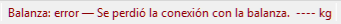

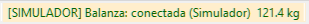
2.4Los menús del Administrador
| Menú | Opciones | Dónde se explica |
|---|---|---|
| Pesaje | Registrar pesaje (F2), Historial de pesajes (F4) | Manual del Operador |
| Boletas | Reimprimir boleta (F3), Buscar / editar boleta (F6), Anular boleta | Manual del Operador y Manual del Supervisor |
| Catálogos | Ganaderos, Clientes, Fleteros | Manual del Supervisor |
| Reportes | Reportes de pesaje, Pesajes por raza, Boletas anuladas | Manual del Supervisor |
| Administración | Usuarios, Parámetros del sistema, Tipo de pesaje, Configuración de balanza, Configuración de impresión, Visor de auditoría | Capítulos 4, 5, 6, 7 y 11 |
| Utilitarios | Backup / Restaurar, Importar datos legados, Visor de logs | Capítulos 8, 9 y 10 |
| Sesión | Cambiar contraseña…, Cerrar sesión (Ctrl+Shift+L), Salir | Este capítulo |
| Ayuda | Asistente de puesta en marcha…, Activar licencia… (solo si el sistema no está activado), Acerca de… | Capítulo 3, capítulo «Licencia del sistema» y este capítulo |
Los menús Administración y Utilitarios son los suyos. El Operador no ve ninguno de los dos, y el Supervisor solo ve Visor de auditoría dentro de Administración.
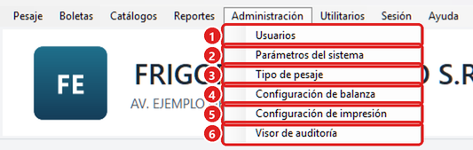
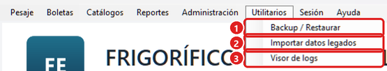
2.5Cambiar su contraseña, cerrar sesión y salir
Para cambiar su contraseña cuando usted quiera:
Abra el menú Sesión.
Elija Cambiar contraseña….
Llene Contraseña actual, Nueva contraseña y Confirmación.
Pulse Aceptar.
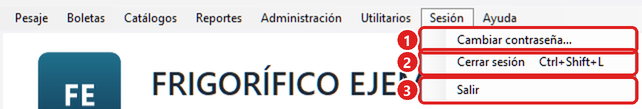
Para dejar de trabajar:
Cerrar sesión vuelve a la pantalla de inicio de sesión, para que entre otra persona. Antes pregunta ¿Está seguro de que desea cerrar la sesión?: pulse Sí. El sistema sigue abierto.
Salir cierra el sistema por completo.
Antes de apagar la computadora cierre el sistema con Salir. Así, si activó la copia de seguridad al cerrar (capítulo 8), la copia se guarda.
Para ver la versión y los datos del sistema, elija Ayuda › Acerca de…. La ventana muestra la versión del sistema, el nombre del equipo, la carpeta de datos, la carpeta del programa, el estado de la Licencia y el Código de equipo. El botón Copiar para soporte copia esos datos para que usted los pegue en un mensaje al técnico.
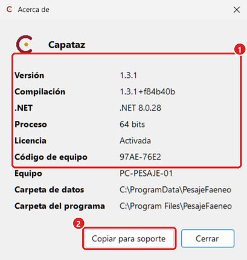
3.Primer arranque: asistente de puesta en marcha
3.1Qué es y cuándo aparece
El Asistente de puesta en marcha es una ventana que le ayuda a dejar el sistema listo para pesar. Le muestra una lista de pasos, cada uno con su estado. Casi todos los pasos abren una ventana que usted usará más adelante en este manual.
El asistente aparece solo, después de que usted entra como Administrador, mientras la puesta en marcha no esté terminada. El Supervisor y el Operador nunca lo ven.
Si lo cerró y quiere volver a abrirlo:
Abra el menú Ayuda.
Elija Asistente de puesta en marcha….
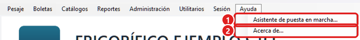
3.2Los ocho pasos
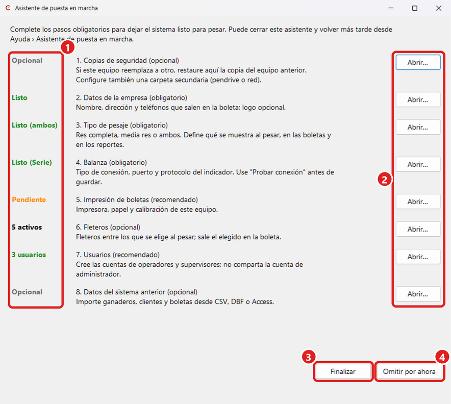
A la izquierda de cada paso aparece su estado: Listo, Pendiente, Opcional, SIMULADOR, Listo (Serie), Listo (Red), Listo (res completa), Listo (media res), Listo (ambos), el número de fleteros activos (N activos) o el número de usuarios activos que no son administradores (N usuarios). A la derecha, el botón Abrir… abre la ventana de ese paso. Cuando la cierra, el estado se actualiza.
| Paso | Para qué sirve | Se explica en |
|---|---|---|
| 1. Copias de seguridad (opcional) | Si esta computadora reemplaza a otra, restaure aquí la copia de la computadora anterior. También se elige una carpeta secundaria (pendrive o red). | Capítulo 8 |
| 2. Datos de la empresa (obligatorio) | Nombre, dirección y teléfonos que salen en la boleta, y el logo. | Capítulo 4 |
| 3. Tipo de pesaje (obligatorio) | Si la empresa pesa res completa y media res, solo res completa o solo media res. | Capítulo 4, sección «El tipo de pesaje» |
| 4. Balanza (obligatorio) | Tipo de conexión, puerto y protocolo del indicador. | Capítulo 7 |
| 5. Impresión de boletas (recomendado) | Impresora, papel y alineación de esta computadora. | Capítulo 6 |
| 6. Fleteros (opcional) | Los fleteros entre los que se elige al pesar. | Manual del Supervisor |
| 7. Usuarios (recomendado) | Las cuentas del personal. | Capítulo 5 |
| 8. Datos del sistema anterior (opcional) | Traer ganaderos, clientes y boletas desde el programa anterior. | Capítulo 9 |
Haga primero el paso 2 (empresa), el paso 3 (tipo de pesaje) y el paso 4 (balanza), que son obligatorios. Después siga con la impresión (5) y los usuarios (7). Si esta computadora reemplaza a otra, haga primero el paso 1 y restaure la copia.
3.3Terminar la puesta en marcha
Complete los pasos 2, 3 y 4. Los otros son opcionales o recomendados.
Si la balanza todavía está como simulador, marque la casilla Continuar con la balanza en modo SIMULADOR (solo pruebas: los pesos no tienen valor comercial). Esa casilla solo aparece si la balanza es un simulador.
Pulse Finalizar.
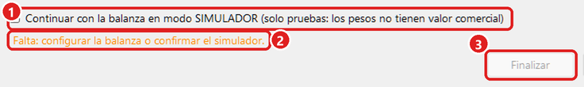
El botón Finalizar está gris hasta que los pasos obligatorios estén listos. Debajo de la lista, una línea naranja dice qué falta, por ejemplo Falta: configurar la balanza o confirmar el simulador.
Al pulsar Finalizar el sistema deja constancia en la auditoría y el asistente no vuelve a aparecer. La tecla Enter no lo finaliza: es a propósito, para que no se termine por accidente.
Si pulsa Omitir por ahora (o Esc), el asistente se cierra sin terminar y vuelve a aparecer la próxima vez que usted entre como Administrador.
Si dice Configure los datos de la empresa antes de finalizar., abra el paso 2 y escriba el nombre real de la empresa.
Si dice Elija el tipo de pesaje antes de finalizar. (o la línea naranja dice Falta: elegir el tipo de pesaje (res completa, media res o ambos).), abra el paso 3 y guarde una opción.
Si dice La balanza está en modo Simulador…, abra el paso 4 y configure la balanza real, o marque la casilla del simulador.
4.Datos de la empresa (Parámetros del sistema)
Para empezar:
Abra el menú Administración.
Elija Parámetros del sistema.
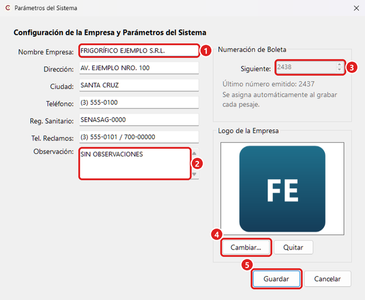
4.1Escribir los datos de la empresa
Estos datos salen en las boletas y en los reportes. El nombre de la empresa también se ve en la pantalla de inicio de sesión, en la pantalla de inicio y en la barra de estado.
| Campo | Qué escribir | Dónde se ve |
|---|---|---|
| Nombre Empresa | El nombre de la empresa. Obligatorio, de 3 a 100 caracteres. | Encabezado de la boleta y de los reportes, inicio de sesión, pantalla de inicio. |
| Dirección | La dirección. Hasta 150 caracteres. | Encabezado de la boleta. |
| Ciudad | La ciudad. Hasta 100 caracteres. | Encabezado de la boleta, junto a la dirección. |
| Teléfono | El teléfono de la empresa. Hasta 50 caracteres. | Encabezado de la boleta. |
| Reg. Sanitario | El número de registro sanitario. Hasta 100 caracteres. | Encabezado de la boleta. |
| Tel. Reclamos | El teléfono para reclamos. Hasta 100 caracteres. | Al pie de la boleta. |
| Observación | El texto que aparecerá ya escrito en el campo de observación al pesar. Hasta 250 caracteres. | En cada pesaje; el Operador puede cambiarlo. |
Haga clic en el campo que quiere cambiar.
Escriba el dato nuevo.
Repita con los otros campos.
Pulse Guardar.
El sistema muestra Parámetros guardados. y cierra la ventana. Si no quiere guardar los cambios, pulse Cancelar.
Si aparece un círculo rojo con una cruz junto a un campo, ese dato no es válido. Ponga el mouse sobre el círculo para leer el mensaje. Por ejemplo: Ingrese el nombre de la empresa (3 a 100 caracteres). Corrija el dato y pulse Guardar otra vez.
4.2Cambiar el logo
El logo sale en las boletas, en los reportes, en la pantalla de inicio de sesión y en la pantalla de inicio.
En el recuadro Logo de la Empresa, pulse Cambiar....
En la ventana Seleccionar logo de la empresa, busque la imagen y elíjala.
Mire la imagen en el recuadro. Es la vista previa.
Pulse Guardar.
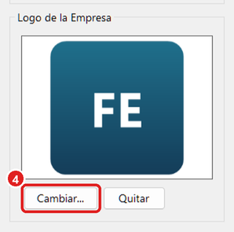
La imagen debe ser de tipo PNG, JPG o BMP, y pesar como máximo 1 MB. El cambio no se aplica hasta que usted pulse Guardar.
Para dejar la empresa sin logo, pulse Quitar y después Guardar.
El logo debe ser una imagen PNG, JPG o BMP. La imagen es de otro tipo. Pida una versión PNG o JPG.
El logo debe pesar como máximo 1 MB. La imagen es muy pesada. Pida una versión más liviana o guárdela de nuevo con menos tamaño en un programa de imágenes, como Paint.
El archivo no es una imagen válida. El archivo está dañado o no es una imagen. Pruebe con otro archivo.
4.3El número de boleta
Cada boleta lleva un número. El sistema lo asigna solo, uno tras otro, cada vez que se graba un pesaje. Una vez emitida la primera boleta, nadie puede cambiarlo a mano.
En el grupo Numeración de Boleta se ven dos cosas:
El campo Siguiente con el número que tendrá la próxima boleta.
Una línea que dice Último número emitido: N, o Aún no hay boletas emitidas.
Así se ve cuando ya se emitió alguna boleta: el campo está en gris y no se puede cambiar.
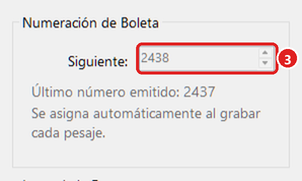
El número de boleta solo se puede fijar antes de emitir la primera boleta. Después de la primera boleta, aunque se anule, el campo Siguiente queda en gris y dice Se asigna automáticamente al grabar cada pesaje.
¿Por qué? Los números de boleta son un control de la empresa. Una boleta anulada conserva su número y ese número nunca se vuelve a usar. Si se pudiera cambiar el número a mano, se podrían repetir números o esconder boletas. Por eso la numeración es automática.
Si usted está empezando y quiere que la primera boleta continúe el talonario anterior (por ejemplo, desde el número 5000):
Abra Parámetros del sistema.
Compruebe que dice Aún no hay boletas emitidas. El campo Siguiente debe estar activo, con la nota Solo puede fijarse antes de emitir la primera boleta.
Escriba el número en Siguiente. Debe estar entre 1 y 999999999.
Pulse Guardar.
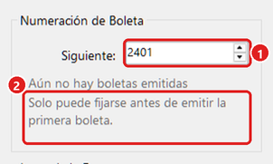
Figura 20. Numeración de boleta antes de emitir la primera boleta: el campo Siguiente se puede escribir 1Campo Siguiente, activo2Nota: solo antes de la primera boletaEl sistema pregunta: Cambiará el siguiente número de boleta de X a Y. Esta acción afecta la numeración oficial. ¿Continuar? Pulse Sí.
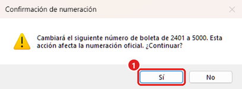
Figura 21. Pregunta de confirmación al cambiar el número de boleta 1Pulse Sí
Si ya existe alguna boleta y el sistema muestra El número de boleta es automático y no puede modificarse una vez emitida la primera boleta., no hay forma de cambiarlo. Si necesita continuar la numeración de un sistema anterior que ya tiene boletas, use la importación de pesajes del capítulo 9: el sistema ajusta solo el siguiente número.
4.4El tipo de pesaje
El tipo de pesaje dice qué pesa su empresa: res completa, media res o las dos. Según lo que elija, el sistema muestra u oculta todo lo relacionado con el tipo que no se usa.
Para abrirlo:
Abra el menú Administración.
Elija Tipo de pesaje. También se abre desde el paso 3 del asistente de puesta en marcha.
Elija una de las tres opciones (círculos 1, 2 y 3) y pulse Guardar (círculo 4):
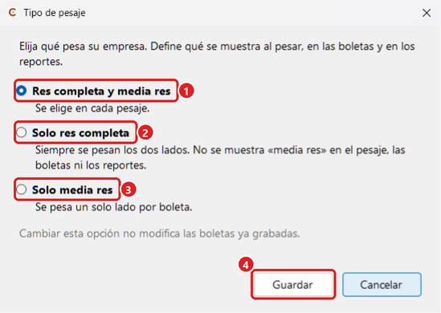
| Opción | Qué cambia |
|---|---|
| Res completa y media res | El operador elige el desposte en cada pesaje (RES COMPLETA o MEDIA RES). |
| Solo res completa | La pantalla de pesaje no muestra Desposte: siempre se pesan los dos lados. Las boletas, las pantallas de boletas y los reportes no mencionan el desposte ni la media res. |
| Solo media res | La pantalla de pesaje no muestra Desposte: se pesa un solo lado. Las boletas, las pantallas de boletas y los reportes tampoco muestran el desposte. |
Cambiar el tipo de pesaje no cambia las boletas ya grabadas. Si ya hay boletas del tipo que deja de pesar, la ventana le avisa cuántas son. Esas boletas siguen mostrando su desposte donde aparezcan; por ejemplo, un reporte que incluya una media res antigua mostrará la columna Tipo Corte.
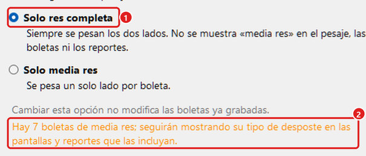
Con Solo res completa, la pantalla de pesaje pasa directamente de Sexo a Observación (círculo 1): no hay campo Desposte y siempre se capturan los dos lados (círculos 2 y 3).
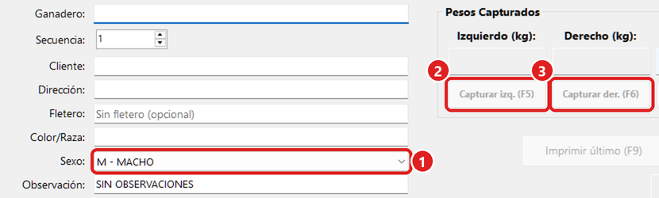
Si ya había una opción guardada y elige otra, el sistema pregunta Cambiará el tipo de pesaje de «…» a «…». ¿Continuar? Pulse Sí para confirmar. El cambio queda registrado en la auditoría.
Si al importar datos del sistema anterior hay boletas del tipo que su empresa no pesa, se importan igual y el informe muestra una advertencia por cada una.
5.Usuarios
5.1Ver la lista de usuarios
Abra el menú Administración.
Elija Usuarios.
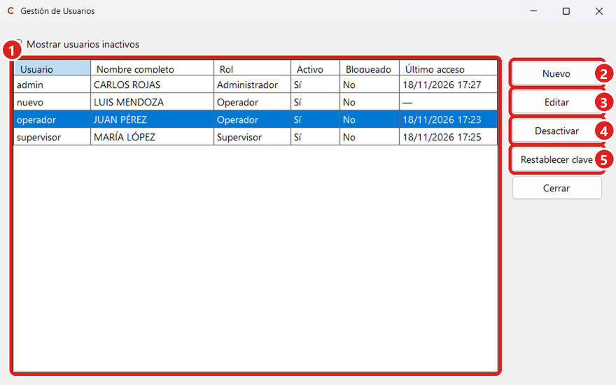
La lista muestra, por cada usuario: Usuario, Nombre completo, Rol, Activo, Bloqueado y Último acceso. Un guion (—) en Último acceso quiere decir que esa persona todavía no entró. Los usuarios desactivados no se ven, salvo que marque Mostrar usuarios inactivos.
5.2Los tres roles, en palabras simples
| Rol | Para qué sirve |
|---|---|
| Operador | Es la persona que pesa. Registra pesajes, imprime y reimprime boletas, y puede dar de alta un ganadero o un cliente nuevo desde la pantalla de pesaje. |
| Supervisor | Hace todo lo del Operador y además revisa y corrige: busca, edita y anula boletas, saca reportes, mantiene los catálogos y ve la auditoría. |
| Administrador | Hace todo lo del Supervisor y además configura el sistema: usuarios, datos de la empresa, balanza, impresión, copias de seguridad, importación de datos y logs. |
5.3Crear un usuario
En la ventana Gestión de Usuarios, pulse Nuevo.
Escriba el nombre de usuario en Nombre de usuario.
Escriba el nombre y apellido de la persona en Nombre completo.
Elija el Rol.
Escriba una contraseña en Contraseña inicial.
Repita la contraseña en Confirmación.
Pulse Guardar.
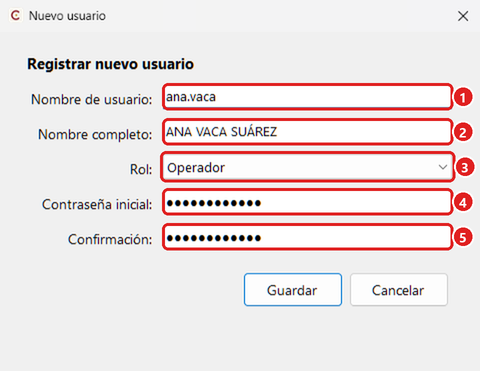
Figura 26. Ventana Nuevo usuario con sus campos 1Nombre de usuario2Nombre completo3Rol4Contraseña inicial5Confirmación: repita la contraseñaEntregue la contraseña inicial a la persona. Ella deberá cambiarla la primera vez que entre.
Las reglas de cada dato:
| Dato | Regla |
|---|---|
| Nombre de usuario | De 3 a 30 caracteres. Solo letras minúsculas sin tilde, números, punto, guion y guion bajo. Por ejemplo: ana.vaca. El sistema lo pasa a minúsculas al salir del campo. No se puede cambiar después. |
| Nombre completo | De 3 a 100 caracteres. |
| Rol | Operador, Supervisor o Administrador. Por omisión sale Operador. |
| Contraseña inicial | De 6 a 100 caracteres. No puede ser igual al nombre de usuario. |
Use de 3 a 30 caracteres: letras minúsculas, números, punto, guion o guion bajo. El nombre de usuario tiene un espacio, una tilde, una ñ u otro carácter no permitido.
Ya existe un usuario con ese nombre. Elija otro nombre.
La contraseña debe tener entre 6 y 100 caracteres. o La confirmación no coincide con la contraseña. Escriba las dos de nuevo.
5.4Cambiar el nombre o el rol de un usuario
En la lista, haga clic en el usuario.
Pulse Editar. También sirve hacer doble clic en el usuario.
Cambie Nombre completo o Rol.
Pulse Guardar.
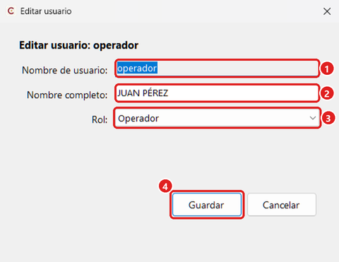
El Nombre de usuario no se puede cambiar. Si necesita otro nombre de usuario, cree un usuario nuevo y desactive el anterior.
5.5Desactivar y reactivar a una persona
Un usuario nunca se borra: se desactiva. Así se conserva su historial de trabajo.
En la lista, haga clic en el usuario.
Pulse Desactivar.
El sistema pregunta ¿Está seguro de que desea desactivar al usuario…? Pulse Sí.
Desde ese momento la persona ya no puede entrar. Si lo intenta, ve El usuario está desactivado. Contacte al administrador.
Para volver a activarla:
Marque Mostrar usuarios inactivos.
Haga clic en el usuario. El botón cambia a Activar.
Pulse Activar y confirme con Sí.
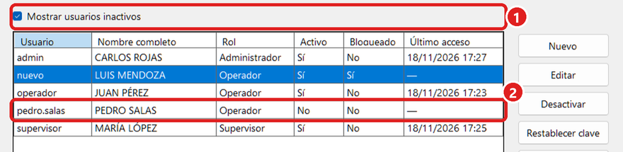
5.6Desbloquear a un usuario
Cuando alguien escribe mal su contraseña 5 veces seguidas, el sistema bloquea su cuenta por 5 minutos. En la lista, la columna Bloqueado dice Sí.
Si la persona puede esperar, el bloqueo termina solo a los 5 minutos.
Si necesita entrar ya, restablezca su contraseña (siguiente sección). Eso también la desbloquea.
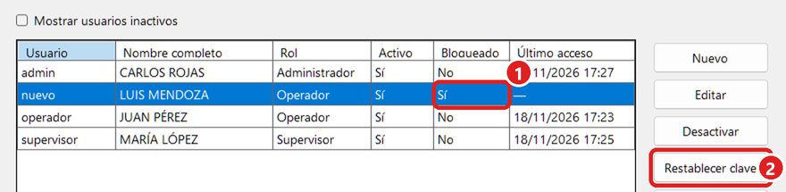
5.7Restablecer la contraseña de un usuario
Úselo cuando alguien olvidó su contraseña o cuando su cuenta está bloqueada. Usted escribe una contraseña temporal, y la persona la cambia al entrar.
En la lista, haga clic en el usuario.
Pulse Restablecer clave.
El sistema pregunta ¿Desea restablecer la contraseña del usuario…? Pulse Sí.
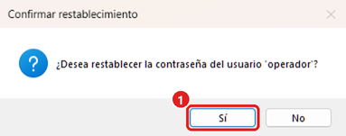
Figura 30. Pregunta de confirmación antes de restablecer la contraseña 1Pulse SíEn la ventana Restablecer contraseña de usuario, escriba la contraseña temporal en Nueva contraseña.
Repítala en Confirmación.
Pulse Aceptar.
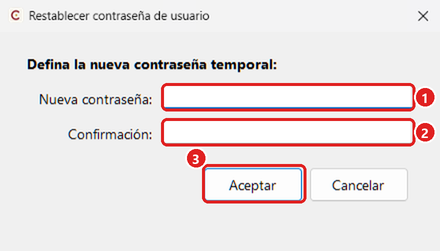
Figura 31. Ventana para escribir la contraseña temporal 1Contraseña temporal2Repita la contraseña temporal3Pulse AceptarEl sistema dice La contraseña fue restablecida. El usuario deberá cambiarla al ingresar. Pulse Aceptar.
Dígale la contraseña temporal a la persona, en persona o por teléfono.
La contraseña temporal sigue las mismas reglas: de 6 a 100 caracteres y distinta del nombre de usuario. Cuando la persona entre, el sistema le pedirá su propia contraseña nueva. Para cambiar su propia contraseña use Sesión › Cambiar contraseña….
5.8Protecciones del sistema
El sistema no le deja hacer estas cosas, para que nunca quede sin administrador. Si lo intenta, aparece una ventana Aviso del sistema con el mensaje:
Debe existir al menos un administrador activo. No se puede desactivar ni bajar de rol al último administrador activo.
No puede desactivar su propio usuario.
No puede cambiar su propio rol. Al editar su propio usuario, el campo Rol está bloqueado.
Cree un usuario por persona y desactive el de quien deje la empresa. Conviene tener un segundo Administrador de confianza: si uno pierde su contraseña, el otro puede restablecérsela.
6.Impresión de boletas
6.1Antes de empezar
La configuración de impresión es propia de cada computadora. Si el sistema se usa en dos computadoras, hay que configurarla en cada una. Arriba de la ventana se ve Equipo con el nombre de la computadora.
Antes de configurar:
La impresora debe estar encendida, con papel y instalada en Windows. Si no está instalada, el sistema no la ofrece.
Si usa una impresora de puntos (matricial), instale el controlador del fabricante. Los controladores genéricos de Windows pueden imprimir lento o con letras dentadas.
Lo más cómodo, y lo que se recomienda, es que la boleta se imprima sola apenas se graba cada pesaje. Para eso hay que dejar marcada la casilla Imprimir la boleta automáticamente al grabar, como se explica en este capítulo.
6.2Qué significa cada dato
Estos son los datos de la ventana Configuración de impresión.
| Dato | Qué significa |
|---|---|
| Impresora | La primera opción, (Predeterminada de Windows: …), usa la impresora que Windows tenga como impresora predeterminada. Las otras opciones son las impresoras instaladas. Elija una concreta si no quiere depender de la predeterminada. |
| Formato | Media carta (216 × 140 mm) es una hoja pequeña, para impresoras de hojas (láser o de inyección) y matriciales. Ticket 80 mm es un rollo angosto, para impresoras térmicas de tickets. Elija el que corresponda a la impresora de su planta. |
| Papel | El tamaño de papel que ofrece la impresora. (Automático) deja que el sistema elija. |
| Copias | Cada copia sale en una hoja aparte, marcada ORIGINAL, COPIA 1 o COPIA 2. |
| Imprimir la boleta automáticamente al grabar | Si está marcada, la boleta sale sola al grabar cada pesaje. Si no, el Operador la imprime con F9. Recomendado: marcada. |
La impresión automática solo funciona si usted pulsó Guardar al menos una vez en esta computadora. Mientras diga Sin configurar, el sistema no imprime solo.
Si no sabe qué formato usar, pruebe primero con Vista previa (muestra) y después con Imprimir muestra, en cada formato. Quédese con el que salga completo y legible en su impresora.
6.3Configurar la impresión
Abra el menú Administración.
Elija Configuración de impresión.
En Impresora, elija la impresora de las boletas. No elija una impresora virtual (Microsoft Print to PDF, XPS, OneNote o fax). Tampoco elija la primera opción si entre paréntesis dice una impresora virtual.
En Formato, elija Media carta (216 × 140 mm) o Ticket 80 mm.
Deje Papel en (Automático), salvo que el técnico le indique otro.
En Copias, elija cuántas copias quiere por boleta, de 1 a 3.
Marque Imprimir la boleta automáticamente al grabar.
Pulse Guardar.
La ventana se cierra al guardar. Bajo el nombre del equipo, el sistema dice Sin configurar: se usan valores por defecto o Configuración guardada.
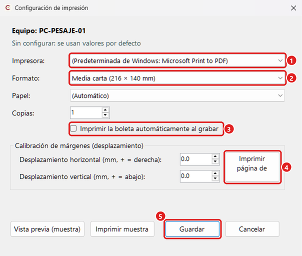
Si aparece en rojo Impresora virtual: pedirá un nombre de archivo en cada impresión., la impresora elegida no imprime en papel: guarda un archivo (por ejemplo Microsoft Print to PDF). El aviso sale cuando la impresión automática está marcada y sigue con No se recomienda con la impresión automática., pero en pantalla el texto puede verse cortado. Elija la impresora real.
Si aparece La impresora configurada no está instalada en este equipo., la impresora que se había elegido ya no existe en Windows. El nombre se ve con (NO INSTALADA). Elija otra impresora.
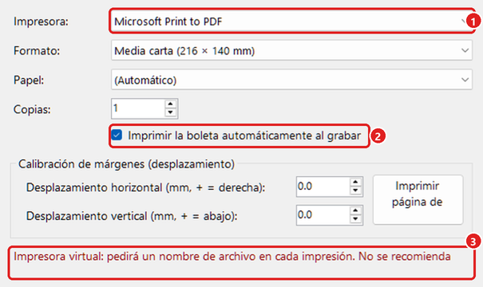
6.4Probar con una boleta de muestra
La boleta de muestra es una boleta falsa para probar. No gasta números de boleta ni toca ningún dato. Usa lo que usted tiene elegido en pantalla, aunque todavía no haya pulsado Guardar.
Pulse Vista previa (muestra). Se abre la ventana Vista previa — boleta de muestra.
Revise los datos de la empresa, el logo y que todo se vea completo.
Pulse Cerrar (Esc).
Pulse Imprimir muestra para imprimirla en papel y comprobar la impresora.
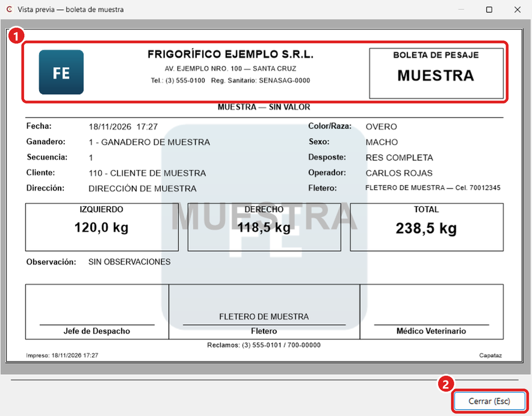
La muestra lleva la leyenda MUESTRA — SIN VALOR y la marca MUESTRA en grande. Una boleta real nunca las lleva.
6.5Alinear la impresión (calibración)
Haga esto solo si la impresión sale corrida: por ejemplo, si el texto se corta en un borde o si usa formularios preimpresos.
Ponga papel en la impresora.
Pulse el botón grande Imprimir página de calibración. Está a la derecha de los dos desplazamientos. Su texto puede verse cortado en pantalla.
Con una regla, mida la distancia entre el recuadro impreso y cada borde del papel. Debe ser de 10 mm en los cuatro lados.
Si el recuadro queda a más de 10 mm del borde izquierdo, reste la diferencia al Desplazamiento horizontal (mm, + = derecha). Si queda a menos, súmela.
Haga lo mismo con el borde de arriba y el Desplazamiento vertical (mm, + = abajo).
Imprima la página de calibración otra vez y mida de nuevo.
Cuando el recuadro quede a 10 mm, pulse Guardar.
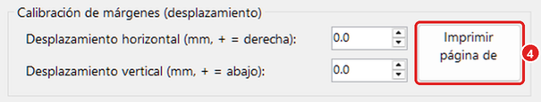
Cada desplazamiento admite valores de -20 a 20 mm.
6.6Si algo sale mal al imprimir
| Mensaje o síntoma | Qué hacer |
|---|---|
| No hay una impresora predeterminada en este equipo. Configúrela en Administración › Configuración de impresión. | Elija una impresora concreta en Impresora y pulse Guardar, o deje una impresora como predeterminada en Windows. |
| La impresora '…' no está instalada en este equipo. Revise Administración › Configuración de impresión. | Instale la impresora en Windows, o elija otra. |
| No se pudo imprimir en '…' | Revise que la impresora esté encendida, con papel y conectada. |
| Cambió el nombre de la computadora, o empezó a usar el sistema en otra computadora | La configuración de impresión es propia de cada computadora y no viaja en las copias de seguridad. Configúrela de nuevo. |
7.Balanza
7.1Cómo se comunica la balanza con el sistema
El sistema lee el peso que el indicador de la balanza (la pantallita con números) envía de forma continua. El indicador se conecta a la computadora con un cable. Casi siempre es un adaptador USB que Windows ve como un puerto COM.
Los datos de esta pantalla deben ser iguales a los del indicador, como cuando dos personas hablan el mismo idioma. Si algún dato no coincide, el sistema no entiende el peso.
Si la balanza ya funciona bien, no cambie nada en esta pantalla. Cualquier cambio equivocado puede dejar la balanza sin lectura. Si debe cambiar algo, anote antes los valores actuales.
7.2Qué significa cada dato
| Dato | Qué significa |
|---|---|
| Tipo | Cómo se conecta la balanza. Serie (RS-232 / USB) es el cable USB o de puerto serie. Red (TCP/IP) es un cable de red. Simulador es una balanza falsa para pruebas. |
| Puerto | El nombre que Windows le dio al cable de la balanza, por ejemplo COM3. El botón Refrescar vuelve a leer los puertos que hay en la computadora. |
| Baudios | La velocidad de la comunicación. |
| Bits de datos, Paridad, Bits de parada | Reglas de la comunicación. Deben ser las mismas que las del indicador. |
| Host / IP y su Puerto | La dirección de la balanza en la red. Solo se usan si el Tipo es Red (TCP/IP). |
| Patrón (regex) | La "plantilla" con la que el sistema encuentra el peso dentro del mensaje del indicador. Ya viene cargada. No la cambie sin indicación del técnico. |
| Separación de tramas | Cómo se sabe dónde termina un mensaje del indicador y dónde empieza el siguiente. |
| Unidad que transmite | Si el indicador envía el peso en kilogramos o en gramos. |
| Lecturas para estabilidad, Tolerancia (kg) | Deciden cuándo el peso se considera estable: cuando las últimas lecturas casi no se diferencian. Ya vienen cargadas (5 lecturas y 0,5 kg). |
| Tiempo sin datos (ms) | Cuánto espera el sistema sin recibir nada antes de avisar que falta información. Ya viene cargado (3000). |
Una trama es cada mensaje que envía el indicador, con un peso adentro.
Si Unidad que transmite está mal, el peso sale mil veces mayor o menor. Por ejemplo, 12345,0 en vez de 12,3.
7.3Abrir la configuración
Abra el menú Administración.
Elija Configuración de balanza.
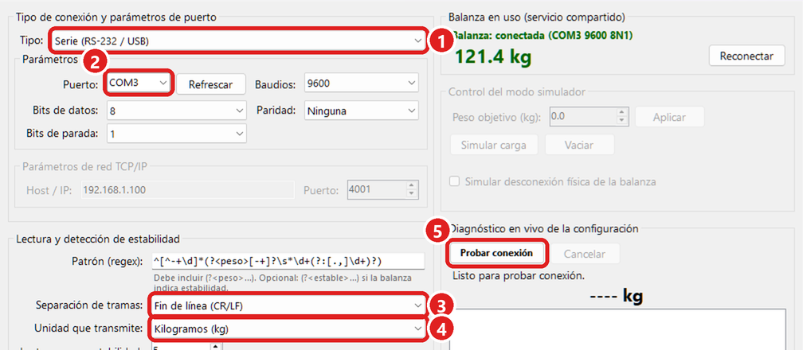
La imagen muestra la parte de arriba de la ventana. Los valores son de ejemplo. Los de su indicador están en la sección siguiente.
7.4Configurar el indicador RX8 Accurex
Estos son los valores del indicador RX8 Accurex que se usa en la planta, verificados con un adaptador USB con chip CH340.
| Dato | Valor |
|---|---|
| Tipo | Serie (RS-232 / USB) |
| Puerto | El puerto COM del adaptador de la balanza (vea la sección Si la balanza dejó de leer… para saber cuál es) |
| Baudios | 9600 |
| Bits de datos | 8 |
| Paridad | Ninguna |
| Bits de parada | 1 |
| Separación de tramas | Inicio con '=' (RX8 / XK3190) |
| Unidad que transmite | Gramos (g) |
| Patrón (regex) | El que viene cargado. No lo cambie. |
En Tipo, elija Serie (RS-232 / USB).
En Puerto, elija el puerto COM del adaptador. Si no aparece, pulse Refrescar.
Elija 9600 en Baudios, 8 en Bits de datos, Ninguna en Paridad y 1 en Bits de parada.
En Separación de tramas, elija Inicio con '=' (RX8 / XK3190).
En Unidad que transmite, elija Gramos (g).
Haga la prueba de la sección siguiente, antes de guardar.
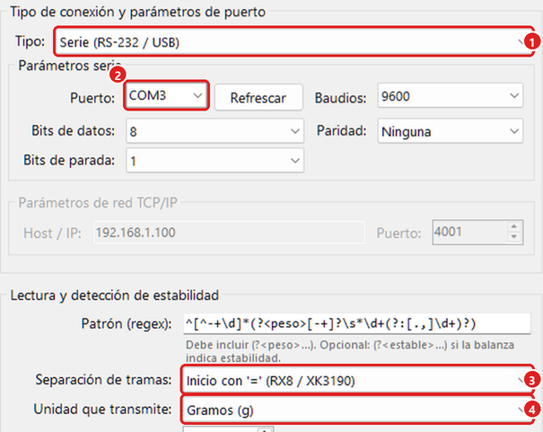
7.5Probar la conexión
La prueba revisa lo que está en pantalla, aunque todavía no lo haya guardado. Dura 10 segundos.
Encienda el indicador. Lo mejor es tener algo de peso quieto sobre la balanza.
Pulse Probar conexión.
Espere. Mientras corre, la lista del cuadro blanco muestra los mensajes tal como llegan y el peso grande muestra la lectura. Puede pulsar Cancelar para detener la prueba.
Lea el resultado debajo del botón.
Si todo está bien, pulse Guardar.
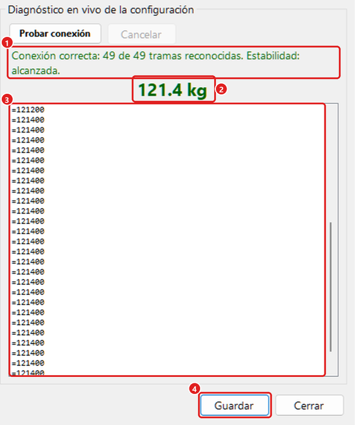
Si el indicador está apagado o no transmite, o si la Separación de tramas no es la correcta, la prueba puede conectar y aun así no recibir ningún mensaje. En ese caso el resultado sale en rojo: Se conectó, pero no llegó ninguna trama. No lo tome como una prueba buena. Encienda el indicador, revise la Separación de tramas (para el RX8, Inicio con '=' (RX8 / XK3190)) y pruebe otra vez.
El sistema avisa Configuración guardada. La balanza se reinició con la nueva configuración. Si no cambió nada, dice No hay cambios para guardar.
Cómo leer el resultado:
| Resultado | Qué significa | Qué hacer |
|---|---|---|
| Conexión correcta: X de Y tramas reconocidas. Estabilidad: alcanzada. | Todo bien. | Pulse Guardar. |
| …Estabilidad: no alcanzada. | Llegan datos, pero el peso no se asentó. | Pruebe con algo de peso quieto en la balanza. Si sigue igual, avise al técnico. |
| …Revise el patrón de lectura. | Llegan mensajes, pero el sistema no los entiende. | Revise Separación de tramas, Unidad que transmite, Baudios y Paridad. Si todo coincide, avise al técnico. |
| Se conectó, pero no llegó ninguna trama. Revise que el indicador esté encendido y transmitiendo, y la «Separación de tramas» (el RX8 usa «Inicio con '='»). (en rojo) | El puerto se abrió, pero en 10 segundos no llegó ningún mensaje completo. Suele ser el indicador apagado o que no transmite, o una Separación de tramas equivocada. | Encienda el indicador y compruebe que transmite. Si es un RX8, elija Inicio con '=' (RX8 / XK3190) en Separación de tramas. Pruebe otra vez. |
| No se pudo conectar: … | No se pudo abrir el puerto. El mensaje dice el motivo. | Revise el cable, el adaptador y el número de Puerto. |
| Prueba cancelada. | Usted la detuvo. | Pulse Probar conexión otra vez. |
Durante la prueba, la lectura normal de la balanza se pausa y la barra de estado dice Balanza: en diagnóstico. Se reanuda sola cuando termina. No haga la prueba en medio del trabajo de pesaje.
La primera vez que configure la balanza real, compruebe con una pesa de peso conocido que el peso que muestra el sistema es correcto. Siga el procedimiento de la Guía de balanza, sección 7.
7.6Si la balanza dejó de leer después de volver a conectar el cable
Cuando el adaptador USB se desconecta y se vuelve a conectar, Windows puede darle otro número de puerto. Por ejemplo, de COM3 a COM4. Entonces el sistema sigue buscando el puerto viejo y no lee nada. El número de COM no es siempre el mismo: hay que averiguarlo en cada computadora.
Para ver el número actual:
Haga clic derecho en el botón Inicio de Windows.
Elija Administrador de dispositivos.
Abra el grupo Puertos (COM y LPT) con doble clic.
Busque la entrada del adaptador. Su número está entre paréntesis, por ejemplo (COM4).
Si no sabe cuál es la entrada del adaptador, desconecte el cable USB y mire cuál desaparece. Vuelva a conectarlo y vea cuál aparece.
Después, en el sistema:
Abra Administración › Configuración de balanza.
Pulse Refrescar.
En Puerto, elija el número nuevo.
Pulse Probar conexión.
Si sale bien, pulse Guardar.
Conecte siempre el adaptador en el mismo puerto USB y póngale una etiqueta. Para dejar fijo el número de COM en Windows, siga la Guía de balanza, sección 2.
El botón Reconectar, en el grupo Balanza en uso (servicio compartido), hace que el sistema intente conectar de nuevo con la configuración guardada.
7.7El simulador de balanza
El simulador es una balanza falsa que está dentro del sistema. Genera pesos inventados que suben y se asientan como si hubiera una res.
Sirve solo para pruebas y capacitación. Los pesos no son reales.
Cuando el sistema se instala, la balanza viene configurada como Simulador. Para pesar de verdad hay que cambiar el Tipo a Serie (RS-232 / USB) o Red (TCP/IP).
Mientras sea un simulador, la barra de estado muestra [SIMULADOR] con fondo naranja claro, y la pantalla de pesaje muestra MODO SIMULADOR — los pesos no son reales.
Solo el Administrador puede capturar y grabar pesos con el simulador. Esas boletas quedan marcadas SIMULADO y se imprimen con la leyenda PESO SIMULADO — SIN VALOR COMERCIAL.
En Configuración de balanza, el grupo Control del modo simulador permite elegir un Peso objetivo (kg) y usar Aplicar, Simular carga y Vaciar. La casilla Simular desconexión física de la balanza imita un cable desconectado. Este grupo solo está activo cuando la balanza guardada es un Simulador.
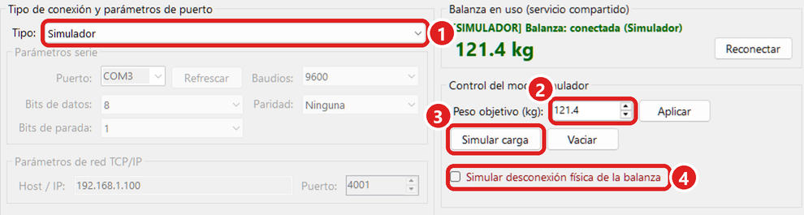
En la pantalla de pesaje, el aviso naranja MODO SIMULADOR — los pesos no son reales recuerda que los pesos no son reales. El Panel de Simulación de Balanza (Admin), abajo a la derecha, hace lo mismo que el grupo de Configuración de balanza.
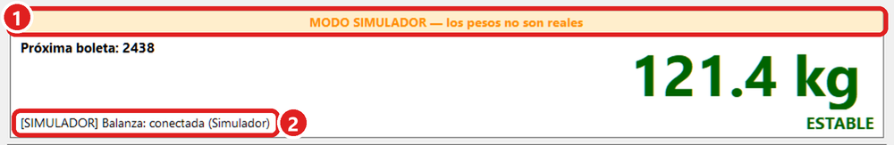
Antes del primer día de trabajo real, deje configurada la balanza real. Si por error se grabó una boleta con el simulador, se puede anular desde Boletas › Anular boleta.
8.Copias de seguridad
8.1Qué es una copia de seguridad y por qué importa
Una copia de seguridad es un archivo que guarda toda la información del sistema en un momento: las boletas, los ganaderos, los clientes, los usuarios, los datos de la empresa y el logo. Sirve para recuperarse si la computadora se daña, si se borra algo por error o si hay que pasar los datos a otra computadora.
Sin copias de seguridad, si la computadora falla se pierde todo. Por eso:
Haga copias todos los días. El sistema puede hacerlas solo (sección Copia automática).
Guarde también una copia fuera de la computadora, en un pendrive o en una carpeta de otra computadora de la red.
Cuide esas copias: contienen todos los datos de la empresa y las contraseñas de los usuarios (cifradas). Guarde los pendrives en un lugar seguro.
Las copias no incluyen la configuración de impresión ni la de copias de seguridad de esta computadora, ni los logs.
8.2La ventana Backup / Restaurar
Abra el menú Utilitarios.
Elija Backup / Restaurar.
La lista muestra las copias que hay, con Fecha, Tipo, Boletas, Última boleta (el número de la última boleta de la copia), Tamaño, Versión, Archivo y Estado. Si la copia está bien, el estado dice Correcta. Solo se pueden restaurar o exportar las copias Correcta.
Los tipos de copia son:
| Tipo | Quién la crea |
|---|---|
| Manual | Usted, con Crear backup ahora. |
| Automático | El sistema, una vez por día. |
| Resguardo previo a restaurar, Resguardo previo a importar, Resguardo previo a actualizar | El sistema, solo, antes de restaurar una copia, importar datos o actualizar el sistema a una versión nueva. Son su red de seguridad. |
El sistema guarda las copias en la carpeta C:\ProgramData\PesajeFaeneo\backups, en tres subcarpetas: manuales, automaticos y seguridad. Esa carpeta de Windows suele estar oculta. Para llegar a ella, pulse Abrir carpeta en esta ventana.
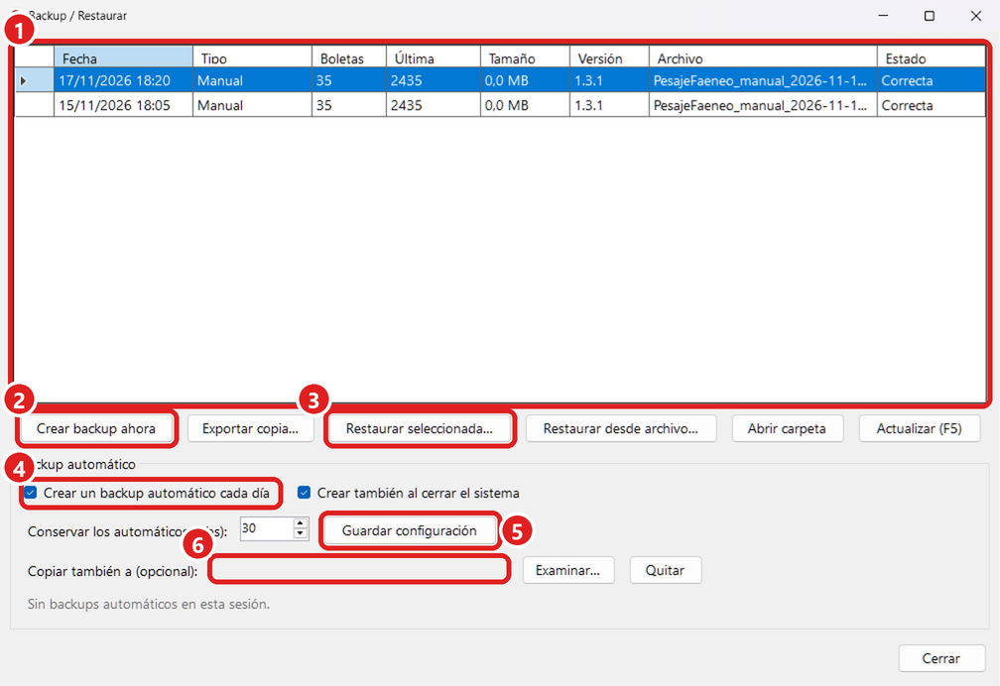
8.3Crear una copia ahora
En la ventana Backup / Restaurar, pulse Crear backup ahora.
Espere. El sistema muestra Copia creada y el nombre del archivo.
Pulse Aceptar. La copia nueva aparece en la lista.
Cuando termine un trabajo importante, o antes de un cambio grande, haga una copia manual.
No hay espacio suficiente en el disco para crear la copia de seguridad. Libere espacio en el disco.
La base de datos actual tiene errores de integridad; no se creó la copia. Revise el log. Avise al técnico y muéstrele el visor de logs (capítulo 10).
8.4Copia automática y cuántos días se guardan
El sistema puede crear una copia solo, una vez por día. Para eso el sistema debe estar abierto: lo revisa unos 2 minutos después de abrirse y luego cada hora, y crea una copia si todavía no hay una del día.
Cuando el sistema se instala, la copia diaria y la copia al cerrar ya vienen marcadas, con 30 días. Revise que sigan así:
En el grupo Backup automático, marque Crear un backup automático cada día.
Si quiere otra copia cuando termine el trabajo, marque Crear también al cerrar el sistema. Esta casilla solo se puede marcar si la anterior está marcada.
En Conservar los automáticos (días), escriba cuántos días se guardan las copias automáticas. Va de 7 a 365. Si no hay otra indicación, deje 30.
Pulse Guardar configuración.
Abajo a la izquierda aparece Configuración guardada.
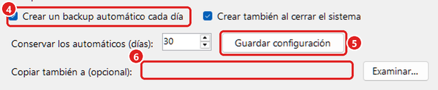
Las copias automáticas más viejas que ese número de días se borran solas. El sistema siempre conserva las 3 copias automáticas más recientes, aunque sean viejas. Las copias manuales no se borran solas.
Debajo de la configuración, una línea dice cuándo se hizo el último backup automático, o Sin backups automáticos en esta sesión. Si el último falló, dice FALLÓ y el motivo.
8.5Guardar también una copia en un pendrive o en la red
Con esta opción, cada copia manual o automática se duplica en otra ubicación. Es la mejor defensa si la computadora se daña.
Una carpeta de red es una carpeta de otra computadora o de un servidor, compartida en la red de la empresa.
Conecte el pendrive a la computadora.
En Copiar también a (opcional), pulse Examinar….
Elija la unidad del pendrive o la carpeta de red.
Pulse Guardar configuración.
Para dejar de usar esa carpeta, pulse Quitar y después Guardar configuración.
Si el pendrive no está conectado cuando se crea una copia, la copia sí se guarda en la computadora. El sistema avisa La copia se creó, pero no se pudo copiar a la carpeta secundaria (¿está conectada?). Conecte el pendrive y cree otra copia con Crear backup ahora.
La carpeta no existe o no está conectada., No se puede escribir en la carpeta elegida. Elija otra carpeta o revise el pendrive.
Elija una carpeta fuera de la carpeta de datos del sistema (por ejemplo un pendrive o una carpeta de red). No elija una carpeta del propio sistema.
Indique una carpeta completa (por ejemplo E:\Backups). Elija la carpeta con el botón Examinar… en lugar de escribirla.
8.6Guardar una copia en otro lugar (exportar)
Para llevarse una copia que ya existe:
En la lista, haga clic en la copia.
Pulse Exportar copia….
En la ventana de Windows, elija dónde guardarla (por ejemplo, el pendrive) y pulse Guardar.
El sistema dice Copia exportada como …. Guárdela en un lugar seguro.
8.7Restaurar una copia de seguridad
Restaurar significa volver el sistema a como estaba cuando se hizo la copia. Es una acción seria.
Todo lo que se registró después de la fecha de la copia se pierde. Antes de restaurar, el sistema guarda una copia de los datos actuales (Resguardo previo a restaurar), pero conviene pensarlo bien.
Restaure solo cuando nadie esté pesando.
No apague la computadora mientras se restaura.
En la lista, haga clic en la copia que quiere recuperar.
Pulse Restaurar seleccionada…. Si la copia está en un pendrive y no en la lista, pulse Restaurar desde archivo… y elija el archivo.
Espere. El sistema revisa que la copia esté sana.
En la ventana Confirmar restauración, lea los datos de la copia: fecha, equipo, boletas, ganaderos, clientes y usuarios. Si hay avisos en naranja, léalos también.
Escriba la palabra RESTAURAR, en mayúsculas, en el cuadro de abajo.
Pulse Restaurar.
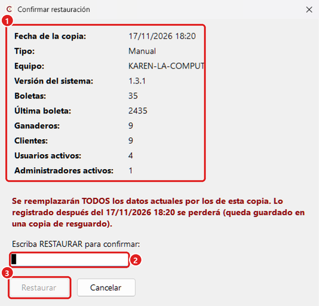
Figura 43. Ventana Confirmar restauración con los datos de la copia y el cuadro para escribir RESTAURAR 1Datos de la copia2Escriba RESTAURAR3RestaurarEl sistema dice La restauración quedó programada. Pulse Aceptar.
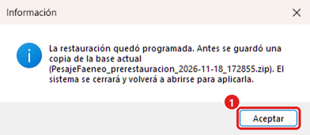
Figura 44. Aviso de que la restauración quedó programada, con el nombre de la copia de resguardo 1Pulse AceptarEl sistema se cierra y se vuelve a abrir solo. Espere.
Al abrirse, dice Se restauró la copia de seguridad del…. Pulse Aceptar.
Entre con los usuarios de esa copia.
El botón Restaurar de la ventana de confirmación está gris hasta que se escribe exactamente RESTAURAR.
Si la copia dice en Estado algo distinto de Correcta, no se puede restaurar. Elija otra.
La copia fue creada con una versión más nueva del sistema. Actualice el sistema antes de restaurarla. Pida al técnico que instale la versión nueva.
La copia no tiene ningún administrador activo: después de restaurarla nadie podría administrar el sistema. Elija otra copia.
La copia de seguridad no es válida: … La copia está dañada o no es de este sistema. Elija otra.
La validación de la copia ya no está disponible. Vuelva a validarla. Pasó mucho tiempo. Empiece de nuevo desde el paso 2.
Si el sistema no se vuelve a abrir solo, ábralo usted. La restauración se aplica al abrirse.
Si aparece Restauración no aplicada, el sistema no pudo aplicar la copia y siguió con los datos de antes. Avise al técnico.
Si el sistema ya no abre, el técnico puede restaurar una copia a mano (Guía de instalación y soporte, sección 8).
Si restaura una copia de otra computadora, el sistema avisa en naranja que revise la configuración de la balanza. Hágalo al terminar (capítulo 7). La configuración de impresión no viaja en la copia: si es una computadora nueva, configúrela (capítulo 6).
Abrir carpeta abre la carpeta de copias en Windows.
Actualizar (F5), o la tecla F5, vuelve a leer la lista.
9.Importar datos del sistema anterior
9.1Cuándo se usa
Se usa cuando la empresa tenía otro programa de pesaje y quiere pasar al sistema nuevo sus ganaderos, sus clientes y sus boletas anteriores. Normalmente se hace una sola vez, durante la puesta en marcha. Solo el Administrador puede hacerlo.
Los archivos del programa anterior pueden ser de estos tipos:
| Tipo de archivo | Extensión |
|---|---|
| Texto separado por comas, punto y coma o tabulador | .csv y .txt |
| Tabla DBF (dBase o FoxPro) | .dbf |
| Base de datos de Access | .mdb y .accdb |
Para leer archivos de Access, la computadora necesita un componente gratuito de Microsoft llamado Microsoft Access Database Engine 2016 Redistributable, de 64 bits. Si falta, el sistema avisa y el técnico puede instalarlo (Guía de instalación y soporte, sección 10). La alternativa es abrir el archivo en Access, exportar cada tabla a CSV, e importar esos CSV.
9.2En qué orden importar
Importe de a un tipo por vez y en este orden:
Ganaderos
Clientes
Pesajes (boletas)
El orden importa. Una boleta guarda el código de su ganadero y de su cliente. Si esos ganaderos y clientes todavía no están en el sistema, la boleta no se puede importar.
Antes de importar, el sistema crea solo una copia de seguridad, llamada Resguardo previo a importar. Si algo sale mal, se puede volver atrás con esa copia (capítulo 8).
9.3Paso 1: elegir el archivo
Abra el menú Utilitarios.
Elija Importar datos legados.
En Tipo, elija Ganaderos, Clientes o Pesajes (boletas).
Pulse Examinar… y elija el archivo en la ventana de Windows.
Si el archivo es de Access, elija la tabla en Tabla.
Pulse Leer archivo.
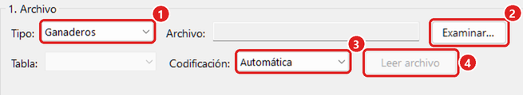
Figura 45. Paso 1 de la ventana Importar datos legados: tipo, archivo y botón Leer archivo 1Tipo de datos que va a importar2Elegir el archivo3Codificación (si las tildes salen mal)4Leer archivo
Debajo aparece cuántas filas tiene el archivo.
Si en la lectura las tildes y las eñes salen como símbolos raros, cambie Codificación (UTF-8, Windows-1252, DOS 850 o DOS 437) y pulse Leer archivo otra vez. Con Automática el sistema prueba solo.
9.4Paso 2: indicar qué es cada columna
En el grupo 2. Columnas, la tabla de la izquierda lista los datos que el sistema necesita (Campo). Los marcados con Sí en Obligatorio deben tener una columna asignada. En Columna, elija de qué columna del archivo sale cada dato. La tabla de la derecha muestra algunas filas del archivo para que usted compruebe.
El sistema ya propone una columna por el nombre. Revise que sea la correcta. Si un dato no existe en su archivo, deje (sin asignar).
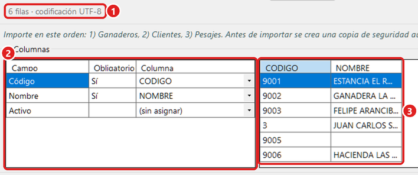
Datos de cada tipo. Los obligatorios son los que dicen Sí en la columna Obligatorio:
| Tipo | Datos obligatorios | Otros datos |
|---|---|---|
| Ganaderos | Código, Nombre | Activo |
| Clientes | Código, Nombre | Dirección, Activo |
| Pesajes (boletas) | N° de boleta, Fecha, Código del ganadero, Código del cliente, Peso izquierdo, Peso derecho | Hora, N° de res (secuencia), Dirección, Color / raza, Sexo, Tipo de desposte, Peso total, Observación, Estado / anulada, Motivo de anulación |
Una misma columna no se puede asignar a dos datos distintos.
9.5Paso 3: simulacro e importación
El simulacro hace la importación completa de prueba, sin guardar nada. Cuenta qué filas entrarían y cuáles tendrían problemas.
Pulse Simulacro.
Lea el resumen, en negrita: Simulacro: N filas leídas; se importarían N; N ya existentes; N con errores (no se importan); N con advertencias.
Revise la tabla de abajo, que explica cada problema (ver la sección siguiente).
Si todo está bien, pulse Importar.
El sistema pregunta Se importarán N fila(s) de …, dice cuántas filas no se importarán y avisa Antes se creará una copia de seguridad. ¿Continuar? Pulse Sí.
Al terminar, el sistema muestra Importación terminada con los números y el nombre de la copia previa. Pulse Aceptar.
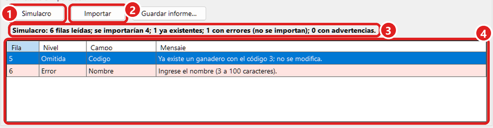
Figura 47. Paso 3: resultado del simulacro con una fila ya existente y una con error 1Simulacro2Importar3Resumen del simulacro4Detalle de cada problema
El botón Importar solo se activa cuando hay filas para importar. Si cambia el archivo o las columnas después del simulacro, hay que simular de nuevo. El sistema avisa con El mapeo cambió: vuelva a ejecutar el simulacro.
Si quiere guardar un archivo CSV con todos los detalles, pulse Guardar informe….
9.6Leer el informe
Cada fila de la tabla de abajo tiene un Nivel:
| Nivel | Color | Qué significa |
|---|---|---|
| Error | Rosado | La fila no se importa. El mensaje dice por qué. |
| Omitida | Sin color | La fila no se importa porque ya existe en el sistema. No es un problema. |
| Advertencia | Amarillo | La fila sí se importa, pero con una nota: por ejemplo, un nombre muy largo se recortó. |
Las filas con error no frenan a las demás: las filas buenas se importan igual.
Mensajes frecuentes:
| Mensaje | Qué hacer |
|---|---|
| Ya existe un ganadero con el código N; no se modifica. (o cliente) | Nada. Esa fila ya estaba cargada. |
| Ingrese el nombre (3 a 100 caracteres). | Corrija el nombre en el archivo original, o deje esa fila afuera. |
| El código N se repite en el archivo (primera vez en la fila N). | El archivo tiene el mismo código dos veces. Corríjalo en el original. |
| No existe un ganadero con el código N. Importe primero los ganaderos. (o clientes) | Importe primero los ganaderos y los clientes. |
| La boleta N ya existe en el sistema y no es una boleta importada; no se reemplaza. | El sistema ya tiene una boleta propia con ese número. No se cambia. |
| La boleta N ya fue importada antes. | La fila ya se importó en otra vez. No se duplica. |
| Fecha u hora no válida: «…». | Corrija la fecha en el archivo original. |
9.7Qué pasa con los códigos y con los números
Los códigos del archivo se conservan. Al importar, cada ganadero y cada cliente mantiene el código que tenía en el programa anterior. Es la única vez que un código no lo asigna el sistema.
Los ganaderos o clientes que se creen después reciben códigos nuevos que siguen al código numérico más alto que ya exista.
El siguiente número de boleta del sistema se ajusta solo: queda después de la boleta más alta importada.
Las boletas importadas se imprimen con la leyenda IMPORTADA DEL SISTEMA ANTERIOR.
La importación no se puede deshacer con un botón. Si se importó algo por error, la salida es restaurar la copia Resguardo previo a importar (capítulo 8), con lo cual se pierde lo registrado después.
Puede repetir la importación del mismo archivo sin miedo: los ganaderos y clientes que ya existen se omiten, y las boletas ya importadas también.
Tipo de archivo no soportado. Use CSV, TXT, DBF, MDB o ACCDB. Elija un archivo de esos tipos.
Asigne una columna al campo «…». Falta asignar un dato obligatorio en el paso 2.
El archivo o el mapeo cambiaron desde el simulacro. Vuelva a ejecutar el simulacro. Pulse Simulacro otra vez.
Si el mensaje habla de Microsoft Access Database Engine, falta el componente de Access. Vea el recuadro del principio del capítulo.
No se pudo guardar el informe. Ciérrelo si está abierto en otro programa. Cierre el archivo del informe e inténtelo de nuevo.
10.Visor de logs
10.1Qué es
Los logs son el registro técnico del sistema: un diario donde el programa anota lo que hace y los problemas que encuentra. Hay un archivo por día, y se guardan 30 días. Los logs no guardan contraseñas.
Usted no necesita leerlos todos los días. Los usará cuando algo falle y el técnico le pida ver el error.
Si el sistema muestra una ventana Error inesperado con el texto Ocurrió un error inesperado. Código: …, anote el código de 8 letras y números. En el visor de logs, escríbalo en Buscar y pulse Filtrar: aparece la entrada exacta de ese error.
10.2Abrir y filtrar
Abra el menú Utilitarios.
Elija Visor de logs.
En Archivo, elija el día que quiere ver. Aparece primero el más reciente, que es el de hoy.
En Nivel, elija qué quiere ver: Todos, Información o superior, Advertencias y errores o Solo errores.
Si busca algo concreto, escríbalo en Buscar.
Pulse Filtrar.
Los más recientes aparecen arriba. Las filas con fondo amarillo son advertencias (WRN) y las de fondo rosado son errores (ERR). Las normales son información (INF).
Para ver una entrada completa, haga clic en ella: el detalle aparece en el cuadro de abajo. Abajo a la izquierda dice Mostrando N de N entradas.
Actualizar (F5) vuelve a leer el archivo.
Abrir carpeta abre la carpeta de logs en Windows. Allí está el archivo de cada día, por ejemplo pesaje-20261005.log.
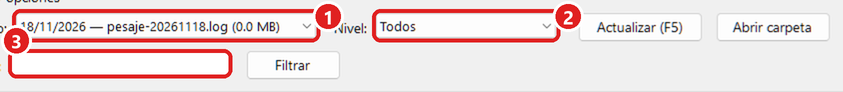
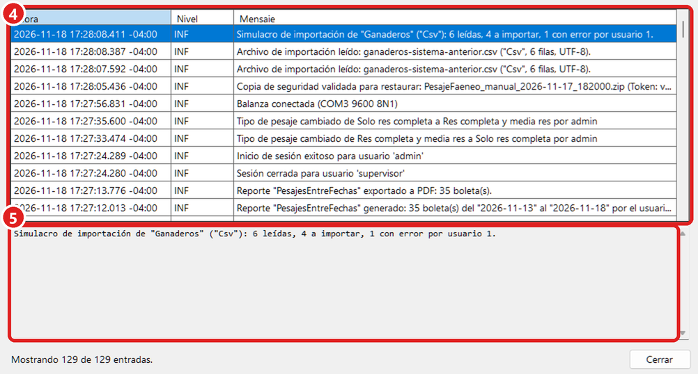
10.3Cuando el técnico le pida el log
Elija el día en que ocurrió el problema.
En Nivel, elija Solo errores y pulse Filtrar.
Anote la hora y el mensaje del error, o haga clic en la fila y copie el detalle.
Si el técnico lo pide, pulse Abrir carpeta y envíele el archivo del día.
Además del log, en Ayuda › Acerca de… el botón Copiar para soporte copia los datos del equipo y del sistema. Péguelos junto con el mensaje.
11.Visor de auditoría
La auditoría es el registro de quién hizo qué y cuándo dentro del sistema: quién entró, quién grabó, editó o anuló una boleta, quién cambió un usuario o la configuración, quién hizo una copia o una restauración.
Abra el menú Administración.
Elija Visor de auditoría.
Elija los filtros que necesite (Desde, Hasta, Entidad, Acción, Usuario, N° boleta).
Pulse Buscar (Enter).
Es solo de lectura: nadie puede borrar ni cambiar lo que allí queda. Se muestran como máximo 500 registros. El detalle de cómo usarlo está en el Manual del Supervisor.
Los cambios que usted hace como Administrador también quedan en la auditoría: crear usuarios, restablecer contraseñas, cambiar parámetros, restaurar copias. Por eso conviene no compartir la cuenta de Administrador.
12.Licencia del sistema
12.1Qué es la licencia
El sistema necesita una clave de activación para funcionar sin límite de tiempo. La clave tiene esta forma: XXXX-XXXX-XXXX-XXXX-XXXX (cinco grupos de cuatro números o letras). Cada clave sirve para una sola computadora.
Si todavía no tiene la clave, puede probar el sistema durante 15 días.
12.2Activar el sistema
La ventana Activar Capataz aparece sola al abrir el sistema mientras no esté activado. También se abre desde Ayuda › Activar licencia….
Asegúrese de que la computadora tenga internet. Solo se necesita esta vez.
En Clave de activación, escriba la clave tal como se la entregaron. No importa si usa mayúsculas o minúsculas, ni si escribe los guiones.
Pulse Activar.
Si la clave es correcta, la ventana se cierra y el sistema queda activado para siempre en esta computadora.
La clave debe tener el formato XXXX-XXXX-XXXX-XXXX-XXXX.: revise la clave letra por letra. Solo lleva números del 0 al 9 y letras de la A a la F.
Clave de activación inválida.: la clave no existe o es de otro programa. Pida la clave correcta a su proveedor.
Esta clave ya fue utilizada en otro equipo.: la clave ya está en otra computadora. Si cambió de computadora, pida a su proveedor que la libere.
Esta clave fue revocada.: pida una clave nueva a su proveedor.
No se pudo contactar al servidor de licencias. Revise la conexión a internet.: conecte la computadora a internet y pulse Activar otra vez. Mientras tanto puede usar Probar 15 días.
12.3Probar 15 días
En la ventana Activar Capataz, pulse Probar 15 días. El sistema funciona completo durante 15 días, y abajo, en la barra de estado, se ve cuántos días quedan (por ejemplo Prueba: 12 días). Para activar antes de que termine, haga clic en ese texto o use Ayuda › Activar licencia….
No cambie la fecha ni la hora de Windows hacia atrás. Si el sistema detecta que el reloj se atrasó, termina la prueba.
12.4Modo consulta
Cuando la prueba termina, la ventana Activar Capataz ofrece Continuar en modo consulta. En modo consulta:
Puede entrar, ver el historial y los reportes, reimprimir, editar y anular boletas, y hacer copias de seguridad. Sus datos no se pierden.
No puede registrar pesajes ni importar datos del sistema anterior: esas opciones aparecen en gris.
Abajo, en la barra de estado, se ve Modo consulta en rojo. Para volver a pesar, active el sistema con Ayuda › Activar licencia…. No hace falta cerrar el programa.
12.5Código de equipo
La ventana de activación y Ayuda › Acerca de… muestran un Código de equipo (por ejemplo A1B2-C3D4). Si llama a su proveedor por la licencia, dígale ese código: así ubica su computadora.
Si cambia de computadora, avise a su proveedor antes: liberará la clave para que pueda activarla en la nueva.
13.Recuperar el acceso del administrador
13.1Cuándo usar este capítulo
Úselo solo si no puede entrar como Administrador (olvidó la contraseña) y no hay otro Administrador que pueda restablecerla desde Administración › Usuarios. Si hay otro Administrador, es más fácil: él restablece su contraseña (capítulo 5).
Este procedimiento restablece la cuenta de Administrador llamada "admin", con una contraseña temporal. Funciona solo en la computadora donde está instalado el sistema, y solo si usted puede abrir programas como administrador de Windows.
"Administrador de Windows" es distinto del "Administrador del sistema de pesaje": es el permiso de la cuenta de Windows de la computadora. Si usted no tiene ese permiso, pida ayuda al técnico que instaló el sistema (Guía de instalación y soporte, sección 9).
13.2Paso a paso
Cierre el sistema de pesaje. Debe estar cerrado en todas las sesiones de Windows de la computadora.
Haga clic en el botón Inicio de Windows y escriba PowerShell.
Haga clic derecho en Windows PowerShell y elija Ejecutar como administrador.
Windows pregunta si permite que la aplicación haga cambios. Pulse Sí.
Se abre una ventana azul. Escriba esta línea y presione Enter:
cd "C:\Program Files\PesajeFaeneo"
Escriba esta otra línea y presione Enter:
.\PesajeFaeneo.WinForms.exe --restablecer-admin
Aparece una ventana Restablecer administrador que dice Se restablecerá la cuenta 'admin' con una contraseña temporal nueva. Quien la use deberá cambiarla al ingresar. ¿Continuar? Pulse Sí.
Aparece otra ventana con la Contraseña temporal. Anótela ahora: se muestra una sola vez.
Pulse Aceptar y cierre la ventana azul.
Abra el sistema de pesaje como siempre.
Entre con el usuario "admin" y la contraseña temporal.
El sistema le pide una contraseña nueva. Escríbala y pulse Aceptar.
En la pregunta del paso 7, el botón marcado por omisión es No. Si presiona Enter sin pensar, cancela. Pulse Sí con el mouse.
El procedimiento deja la cuenta "admin" activa, con rol Administrador, desbloqueada y con la contraseña temporal. Si la cuenta "admin" no existía, la crea. No toca a los demás usuarios, no abre el sistema y no se anota la contraseña en ningún registro. Sí queda registrado en la auditoría que se restableció la cuenta.
Si aparece Para restablecer la cuenta de administrador, ejecute el sistema como administrador de Windows…, la ventana azul no está abierta como administrador. Ciérrela y repita desde el paso 2.
Si aparece El sistema ya está en ejecución en este equipo (puede estar abierto en la sesión de otro usuario de Windows)., el sistema sigue abierto en alguna parte. Ciérrelo con Sesión › Salir, en todas las sesiones de Windows, y repita.
Si PowerShell dice que no encuentra la carpeta, el sistema está instalado en otra. Use la ruta de su instalación. Si otro Administrador puede entrar, Ayuda › Acerca de… muestra la Carpeta del programa.
Si olvidó anotar la contraseña temporal, repita el procedimiento: se crea una nueva.
14.Si algo sale mal
| Problema | Causa probable | Qué hacer |
|---|---|---|
| Una persona dice que no le aparece una opción del menú | Su rol no tiene permiso para esa opción | Revise su rol en Administración › Usuarios y cámbielo si corresponde. |
| Alguien no puede entrar y dice Usuario bloqueado temporalmente… | Escribió mal la contraseña 5 veces | Espere 5 minutos, o use Restablecer clave. |
| La balanza aparece en rojo | Cable o adaptador suelto, indicador apagado, o el número de puerto COM cambió | Revise la conexión y el indicador. Si cambió el puerto, vea el capítulo 7. |
| Al probar la balanza sale en rojo Se conectó, pero no llegó ninguna trama. | El indicador está apagado o no transmite, o la Separación de tramas no es la correcta | Encienda el indicador y revise Separación de tramas: para el RX8, Inicio con '=' (RX8 / XK3190) (capítulo 7). |
| La balanza dice [SIMULADOR] | La balanza está configurada como simulador | Cambie el Tipo a Serie (RS-232 / USB) y guarde (capítulo 7). |
| El peso sale mil veces mayor o menor | Unidad que transmite mal elegida | Para el RX8, elija Gramos (g) (capítulo 7). |
| Una boleta se grabó pero no se imprimió | Impresora apagada, sin papel o mal configurada | Revise la impresora. El Operador puede reimprimir con F9. Revise la configuración (capítulo 6). |
| Las boletas no se imprimen solas | La impresión automática no está activada, o nunca se guardó la configuración | Abra Configuración de impresión, marque la casilla y pulse Guardar (capítulo 6). |
| Aparece Error inesperado con un código | Falla no prevista | Anote el código y qué estaba haciendo. Búsquelo en Utilitarios › Visor de logs y avise al técnico (capítulo 10). |
Glosario
- Administrador
- el rol que puede configurar el sistema: usuarios, empresa, balanza, impresión, copias de seguridad e importación.
- Auditoría
- el registro de quién hizo qué y cuándo en el sistema. Nadie puede borrarlo.
- Backup
- palabra en inglés para copia de seguridad.
- Boleta
- documento impreso que respalda cada pesaje. Tiene un número único.
- Calibración
- ajuste que alinea lo que la impresora imprime con el papel.
- Carpeta
- un "cajón" de la computadora donde se guardan archivos.
- Carpeta de red
- una carpeta de otra computadora o servidor, compartida en la red de la empresa.
- Carpeta secundaria
- la carpeta (pendrive o red) donde el sistema duplica cada copia de seguridad.
- Código
- número que el sistema asigna solo a cada ganadero, cliente y fletero. En una importación se conserva el del programa anterior.
- Contraseña temporal
- la contraseña que el Administrador escribe al restablecer la de otra persona. Quien la recibe debe cambiarla al entrar.
- Copia de seguridad
- un archivo que guarda toda la información del sistema en un momento. Sirve para recuperarla si algo se daña.
- Desposte
- si una boleta es de una res completa o de una media res.
- Fletero
- la persona que transporta la carne.
- Ganadero
- la persona que entrega los animales para faenar.
- Impresora predeterminada
- la impresora que Windows usa cuando no se le indica otra.
- Impresora virtual
- una impresora que no usa papel y guarda un archivo, como Microsoft Print to PDF.
- Indicador
- el aparato con pantalla que muestra el peso de la balanza y lo envía a la computadora.
- Log
- el registro técnico del sistema, con un archivo por día.
- Media carta
- formato de hoja de 216 × 140 mm para la boleta.
- Media res
- la mitad de un animal faenado.
- Operador
- el rol de la persona que pesa e imprime las boletas.
- Pendrive
- una memoria pequeña que se conecta a un puerto USB.
- Puerto COM
- el nombre (COM3, COM4…) con que Windows identifica el cable por donde la balanza se comunica con la computadora.
- Res completa
- un animal faenado entero, que se pesa en dos lados.
- Resguardo
- copia de seguridad que el sistema hace solo antes de restaurar, importar o actualizar.
- Restaurar
- volver el sistema a como estaba cuando se hizo una copia de seguridad.
- Rol
- el tipo de cuenta de cada persona (Operador, Supervisor o Administrador). Decide lo que puede hacer.
- Simulacro
- prueba de una importación que no guarda nada.
- Simulador
- balanza falsa del sistema, solo para pruebas. Sus pesos no son reales.
- Supervisor
- el rol que revisa y corrige: busca, edita y anula boletas, saca reportes y mantiene los catálogos.
- Ticket 80 mm
- formato de boleta en rollo angosto, para impresoras térmicas.
- Tipo de pesaje
- lo que pesa la empresa: res completa, media res o las dos. Lo elige el Administrador.
- Trama
- cada mensaje que envía el indicador de la balanza, con un peso adentro.
- Usuario bloqueado
- cuenta que no puede entrar por 5 minutos tras 5 contraseñas equivocadas.
Hoja de teclas rápidas
Imprima esta hoja y téngala a mano. Las teclas para pesar están en el Manual del Operador.
En la pantalla principal
| Tecla | Qué hace |
|---|---|
| F2 | Registrar pesaje |
| F3 | Reimprimir boleta |
| F4 | Historial de pesajes |
| F6 | Buscar / editar boleta |
| Ctrl+Shift+L | Cerrar sesión |
En cualquier ventana
| Tecla | Qué hace |
|---|---|
| Enter | Acepta o busca, según la ventana |
| Tab | Pasa al siguiente campo |
| Esc | Cierra la ventana o cancela |
| F5 | En Backup / Restaurar y en Visor de logs: vuelve a leer la lista |